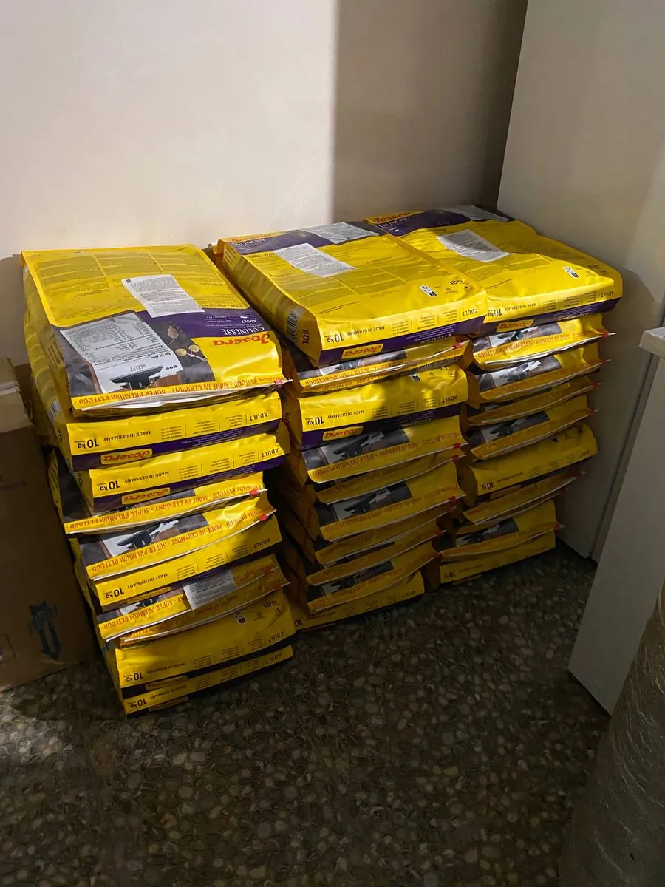
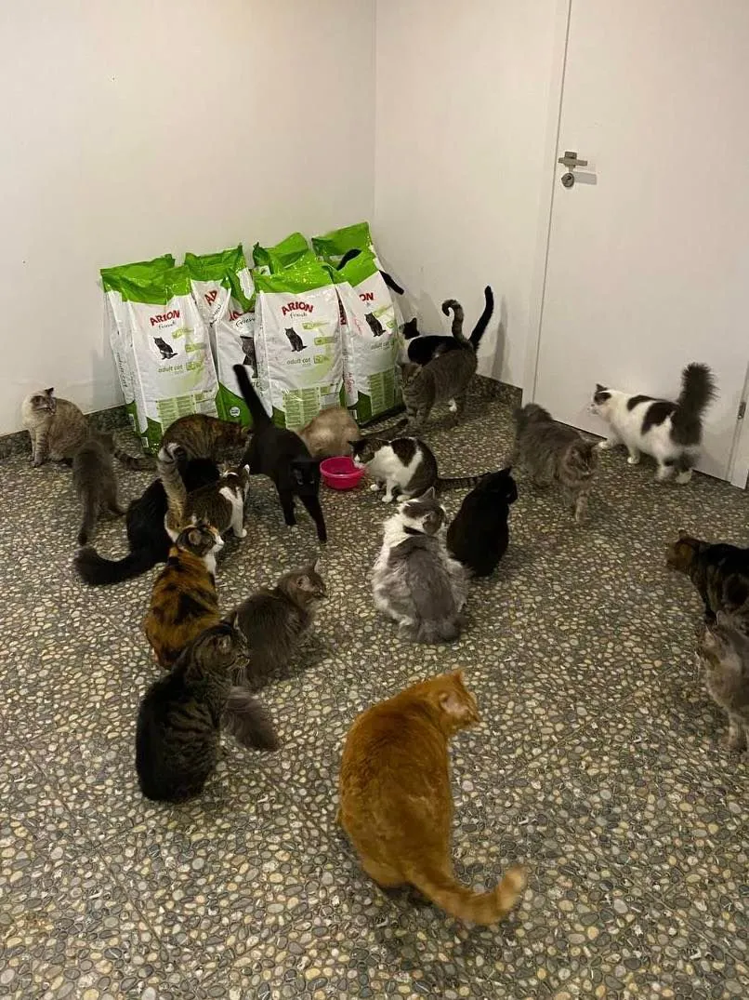
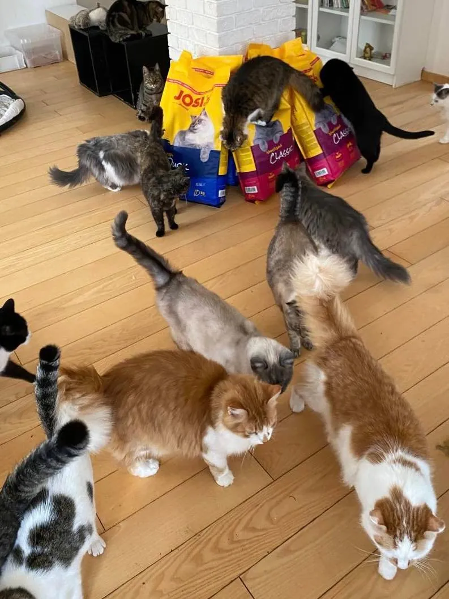
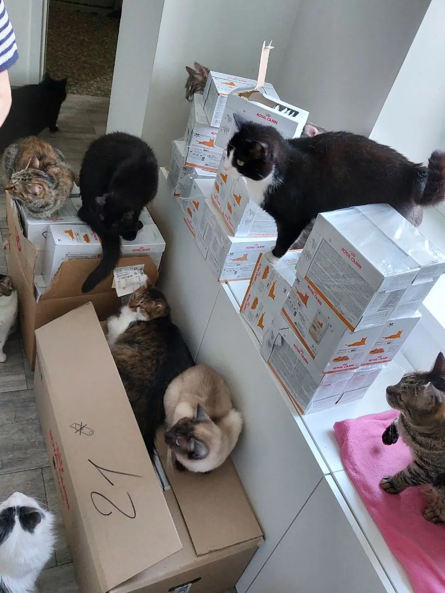
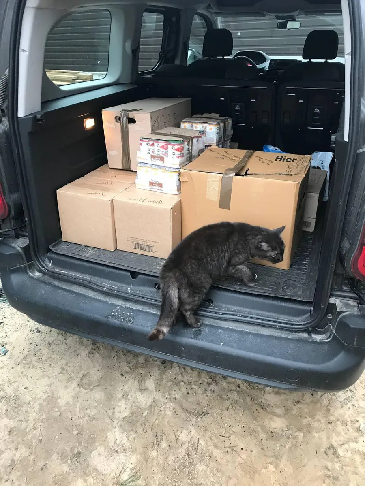
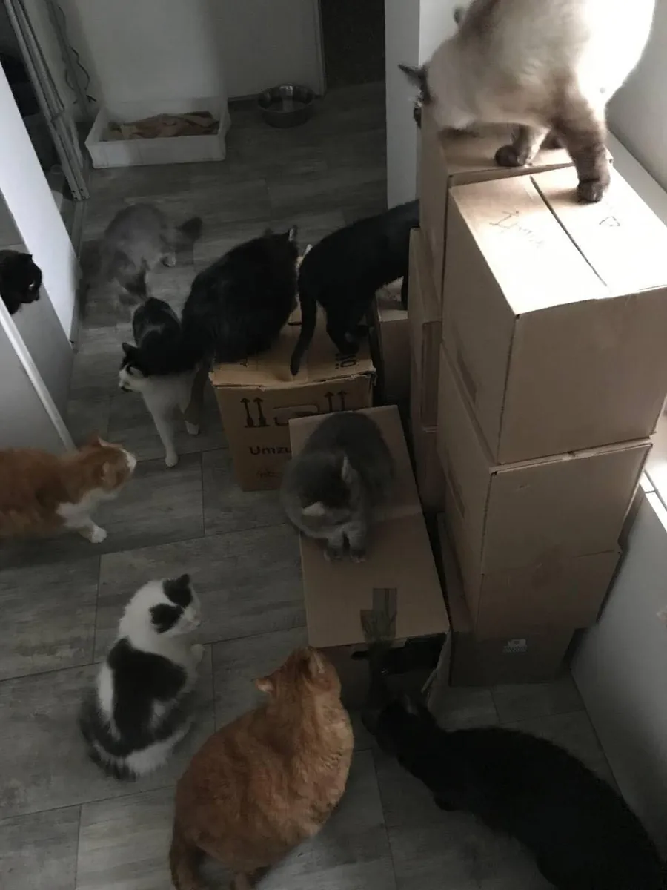
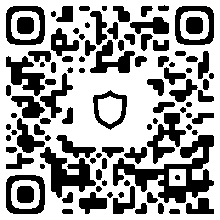
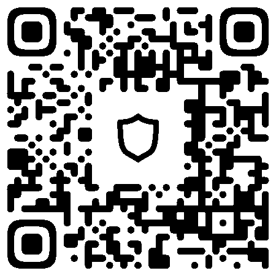
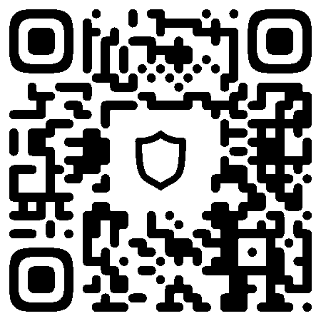

Допоможіть нашому котячому притулку!



Ваша щедрість по-справжньому змінює життя наших пухнастих друзів. Суми нижче показують, як пожертви допомагають нам забезпечувати котів їжею — тим, що найбільше потрібно кожному з них.
1€ - день харчування для одного кота.
7€ - тиждень харчування для одного кота.
30€ - місячний запас корму для одного кота.
365€ - цілий рік харчування для одного кота.
Лише на корм для котів наш притулок щороку витрачає понад 20 000€.
Якісний корм має значення. Можливо, ви запитаєте, чому ми так наголошуємо на якісному кормі для наших котів. Причина проста, але важлива: якісний корм — це здоровіші коти. Коли ми годуємо котів якісною, поживною їжею, вони рідше хворіють. Така їжа багата на необхідні поживні речовини, які зміцнюють імунітет і допомагають ефективніше протистояти хворобам та інфекціям.
Натомість у неякісному кормі цих речовин часто бракує, а наповнювачі чи добавки в ньому можуть шкодити здоров'ю кота. Наслідок — частіші хвороби, більші витрати на ветеринара і, що найважливіше, зайві страждання наших пухнастих друзів. Годуючи котів якісним кормом, ми вкладаємо в їхнє здоров'я та добробут. А здоровий кіт — щасливий кіт. Ваші щедрі пожертви допомагають нам подбати, щоб кожен кіт під нашою опікою отримував усе необхідне, щоб жити повноцінно.
Окрім корму, притулок має й інші витрати, з якими допомагають ваші пожертви:
Опалення: тримати котів у теплі, особливо в холодні місяці, життєво важливо.
Стерилізація та щеплення: ці профілактичні заходи — основа здоров'я всіх мешканців притулку.
Невідкладне лікування: багато наших пухнастих друзів потрапляють до нас у поганому стані й потребують негайної ветеринарної допомоги.
Спеціальні дієти: деяким котам через стан здоров'я потрібен особливий корм.
Транспорт: щоб привозити котів до притулку й возити їх до ветеринара, потрібен надійний транспорт.
Інші витрати: утримання притулку — це ще безліч витрат, від засобів для прибирання до комунальних послуг і не тільки.
Ми вдячні вам за щедрість і любов до наших хвостатих друзів. Кожен внесок наближає нас до мети — щоб кожен кіт під нашою опікою мав безпечний і турботливий дім.
Пряма допомога притулку: пожертви натурою



Шановні підтримувачі,
Існує безліч способів, якими ви можете допомогти нам виконувати нашу місію, і один з найважливіших способів - це безпосередня допомога. Це може бути у формі сухого або консервованого корму для тварин, які перебувають під нашим піклуванням. Ваш внесок допоможе нам підтримувати наш запас і гарантує, що всі наші хутряні друзі добре годуються та є здоровими.
Допомогу ви можете відправляти за адресою:
Нова Пошта,
Ірпінь 1 відділення,
Єрмакова Ірина Анатоліївна,
тел. +380962734547
Якщо ви знаходитесь в будь-якій європейській країні та готові допомогти нам, ми будемо величезно вдячні за вашу допомогу. Зверніться до нашого волонтера за номером +380981972783
Ви можете відправити свої внески до Берліна, Німеччина, і ми гарантуємо, що вони будуть переслані в Україну.
Крім того, якщо вам потрібно дізнатися більше деталей або у вас є конкретні запитання щодо цього процесу, ви можете звернутися до наших волонтерів. Вони завжди готові і бажають допомогти:
В Україні +380981972783
В Європі +380981972783
Пам'ятайте, кожна допомога має значення. Ваші пожертвування кормом для домашніх тварин не тільки будуть годувати наших вихованців, але й зігрівають їх серця, знаючи, що є люди, які піклуються.
Дякуємо вам за вашу постійну підтримку та щедрість. Разом ми можемо зробити справжню різницю в житті цих тварин.
Як ви можете нам допомогти: способи пожертв
Вітаємо наших шановних прихильників!
Ми невпинно працюємо заради нашої місії, і ваша підтримка — наша рушійна сила. Щоб вам було простіше й зручніше допомагати, ми зібрали різні способи пожертв. Ваша допомога — невід'ємна частина нашого шляху, і ми хочемо, щоб допомагати було якомога зручніше.
Ви можете підтримати нас, переказавши кошти безпосередньо на нашу картку ПриватБанку або Monobank. Кожна копійка важлива, і ми щиро вдячні за вашу підтримку.
Переказ на картку ПриватБанку: 5168 7451 0135 8445
Перекази криптовалютою: ми приймаємо пожертви в криптовалюті, а саме:

Bitcoin (BTC) bc1qut0hmn53uyf5cdtvx02vnfw57l6e6eg38j7cmq

Ethereum (ETH) 0xcAcb7ba5DE21D7Ead80754c2Bf62B2B38ceE67F6
USDT (ERC20) 0xcAcb7ba5DE21D7Ead80754c2Bf62B2B38ceE67F6

USDT (TRC20) TBbXHp4gczeeV5tSQXJhEVTZaYVMLKv79o
Щиро дякуємо вам за підтримку та довіру. Кожна пожертва відіграє важливу роль у нашій щоденній роботі. Разом ми можемо змінити життя на краще.
Якщо вам потрібні детальніші інструкції щодо пожертви, звертайтеся до нас. Ми завжди раді допомогти. Дякуємо за вашу незмінну підтримку.